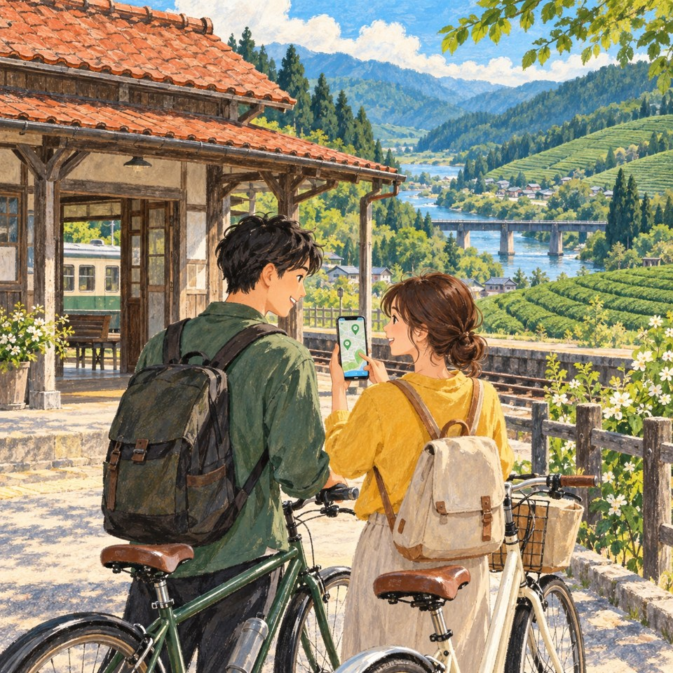
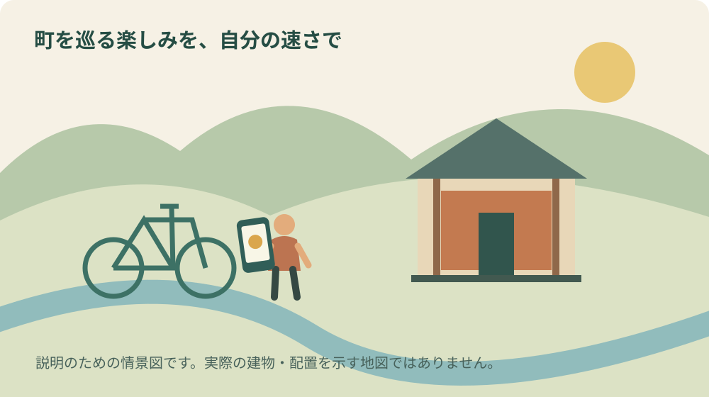
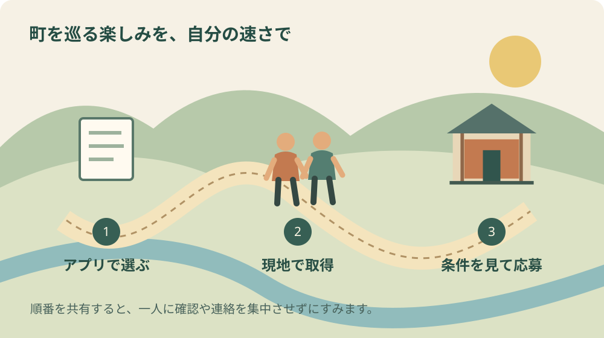

遠州スタンプラリー2026｜森町からの参加手順

表紙は内容を伝えるためのAI生成イラストです。実在の会場や当日の様子を撮影したものではありません。
この記事の要点
Q. 遠州スタンプラリーは森町からどう始めますか。
A. TIPSの企画ページで森町の対象3か所から訪問先を選び、現地のQRコードまたはGPSで取得を確認します。C賞は2市町以上・4スポット以上が条件です。森町内の3か所だけでは届かず、条件達成後の応募手続きも確認します。
スタンプラリーは、行ったことのない店や施設へ足を向けるきっかけになります。一方、点数を集めることだけを急ぐと、店での滞在や家族の休憩が後回しになります。森町から参加するなら、最初の一日で全部を回るより、無理なく訪ねられる一か所を選ぶところから始めたいと思います。
この記事では、2026年9月26日に確認した「おもいふかき遠州ぐるっと！スタンプラリー2026」の参加手順を整理します。主催は静岡県遠州観光協議会です。私が実際に全スポットを回った体験記ではありません。公表された条件と、大石浩之（磐田市／不動産業）としての回り方の提案を分けて書きます。
受け入れる店や施設には、本来の営業があります。レジでの会計、体験の案内、鉄道の利用案内と同じ場所で、スタンプについて尋ねる場面もあるでしょう。参加者がアプリの準備を済ませ、質問を短くまとめることは、店側の手間への小さな配慮になります。
遠州6市町の企画を、森町の3スポットから始める
袋井市の開催案内による実施期間は、2026年9月14日から2027年1月31日までです。対象は御前崎市、森町、磐田市、袋井市、掛川市、菊川市の6市町。静岡県公式観光アプリTIPSを使って、現地を訪ねながらスタンプを取得する仕組みです。
森町の対象として挙げられているのは、森町体験の里アクティ森、フジヤ・茶風詩、遠州森駅（レンタサイクル）の3か所です。店名が似た別の場所へ向かわないよう、アプリ内の企画ページで施設名と所在地を確かめます。検索結果の写真だけで目的地を決めないようにします。
ここで意外なのは、森町の3か所だけではC賞の応募条件に届かないことです。C賞は「2市町以上」と「4スポット以上」の両方が必要と案内されています。3つ集めたこと自体は周遊の記録になりますが、町内を全部回れば自動的に応募できるという読み方はしません。
A賞とB賞には別の周遊条件があります。この記事では初めて参加する人の手順に絞り、景品を網羅しません。どの賞へ応募するかは、アプリの案内を読み、残りの期間と交通費を見て決めます。抽選の景品を、旅行費用が戻ってくる約束のように考えないことです。
出発前にTIPSの企画ページを開く
参加の準備は、自宅など落ち着いて操作できる場所で行います。公式案内からTIPSの案内へ進み、対象のスタンプラリーの名前を確認します。別の年の企画や、同じアプリ内の別企画を開いていないかを見ておけば、現地で読み取り場所を探す前に迷いを減らせます。
次に、アプリに表示される参加条件や利用に必要な設定を読みます。端末によって表示や権限の求め方が違う可能性があります。位置情報やカメラを使う場面では、その用途を確認して設定します。この記事は、特定の機種の画面を実機で検証した操作マニュアルではありません。
家族で一台を使うか、それぞれの端末を使うかも事前に話します。一台で複数人分の応募ができるか、同じ住所から何口まで応募できるかは、確認した市の概要だけでは判断できません。都合よく推測せず、企画内の応募条件と注意事項に従います。
通信が不安なら、現地の営業時間や所在地は紙にも控えます。ただし、画面を保存した画像だけでスタンプが取得できるとは限りません。オフラインでの取得や後日の救済があると確認できていないため、必要な通信環境とバッテリーを出発前に見ておくのが私の提案です。
取得と応募を、別々の確認として扱う
袋井市の案内では、専用のスタンドPOPにあるQRコードを読む方法と、訪問場所でGPS機能を使う方法が示されています。現地で案内されている方法を使い、取得できたことをアプリ上で確認します。QRコードを見つけただけで、処理まで終わったと思い込まないようにします。
QRコードを探すときは、入口やレジ付近の案内を先に見ます。見つからなければ、会計や案内が一段落したときに企画名を示して尋ねます。スタッフが端末操作のすべてを代わりに行うことを前提にせず、自分がどの画面で止まっているかを伝えると確認しやすくなります。
GPSで取得できない場合も、道路へ出て端末を操作し続けることは避けます。安全に止まれる場所で、対象施設、位置情報の設定、通信状態を順に見ます。立入禁止の場所へ近づけば反応するだろうと考えないこと。取得判定の範囲がどこまでかは、本記事では検証していません。
取得後は、獲得数と市町の数を別に確認します。同じ市町の中で数を増やしても、市町数の条件は増えません。例えば森町で3スポット、隣の市で1スポットを取得できれば、数え方の上では2市町・4スポットです。ただし、応募できる状態かどうかはアプリの表示を確認します。
応募には応募フォームでの手続きが関わります。スタンプ取得だけで抽選への申込みが完了したと決めつけず、賞の選択や必要事項、送信後の表示を確認してください。住所やメールアドレスは、連絡や発送に使われる情報です。入力時に誤りがないか、送信前に見直します。

アクティ森は2026年の改修後の情報を使う
森町の2026年4月26日付の案内では、アクティ森が5月1日にリニューアルオープンすると公表されています。指定管理者の変更などに伴う休場を経て、従来のパターゴルフ場はマウンテンバイクパークへ生まれ変わると説明されています。古い紹介の施設内容を、そのまま今の予定へ入れないようにします。
町の案内は、施設内の受付終了時間がそれぞれ異なることにも触れています。スタンプ取得のための訪問と、体験活動の参加は別に確認します。閉園まで時間があるから体験も申し込めると判断しないことです。体験の予約、利用条件、料金は施設の最新案内を見ます。
私は、家族で訪ねるなら「必ずしたいこと」を一つ決める方法がよいと思います。体験を主目的にする日はスタンプをおまけとし、短時間の周遊の日は長い体験を詰め込まない。どちらも楽しみ方として成立します。立ち寄り先を増やすために、子どもの休憩を削る必要はありません。
雨や暑さが気になる場合は、屋外活動が予定どおりできるかを確認します。この記事で営業や体験の実施を保証することはできません。同行者の体調と施設の案内を見て、別の日に回す選択を残します。期間のある企画なので、一日で達成することだけを目標にしなくてよいと考えます。
遠州森駅では、駅を使う人の動線を空ける
遠州森駅は観光の立ち寄り先であると同時に、鉄道を利用する人の場所です。森町観光協会は、駅でのレンタサイクルについて案内しています。自転車を借りることとスタンプを取得する条件は別なので、貸出時間だけを見て取得可能時間まで同じだと決めつけないようにします。
自転車を組み合わせるなら、返却の時刻、雨の場合の扱い、借りる車種、人数分の空きを先に確かめます。借りたあとで遠いスポットを追加すると、帰路に焦りが生まれます。最初に戻る時刻を決め、その範囲で往復できる行先を選ぶという順序が、私には合理的に感じられます。
駅の写真を撮る場合も、乗降する人、窓口に並ぶ人の動きを優先します。スマートフォンの画面へ集中すると、立ち止まった場所が通路だと気づきにくくなります。撮影や操作は安全な場所で止まって行い、ホームや線路周辺の立入りは鉄道の案内に従ってください。
町のリノベーション推進計画は、遠州森駅前を町の玄関口や情報発信の拠点として位置づけています。これは将来の整備や活用を示す計画であり、記載されたすべての施設が完成しているという意味ではありません。周遊の入口という考え方と、今日使える設備の確認を分けて読みます。
駅舎そのものに関心を持ったら、遠州森駅と遠江一宮駅の文化財を整理した記事が寄り道の手がかりになります。スタンプのためだけに来た場所でも、建物を見る視点が一つ増えると、次に訪れる理由ができます。
良い点：地元の一店から町外へつながる
私がこの企画の良い点だと考えるのは、森町の住民も地元の店から始められることです。遠方から来る観光客だけが参加者ではありません。普段通り過ぎている場所を訪ね、店で何を扱っているかを知る機会になります。買い物や体験を強制せず、関心を持った場所を大切に訪ねたいと思います。
6市町に対象があることは、生活圏の外側を少し知るきっかけにもなります。町内3スポットで終わらない応募条件を、移動を強いるものとしてではなく、隣の市を知る選択肢として使いたい。応募を目指すかどうかは、それぞれの家族が交通費と時間から決めればよいと考えます。
アプリで場所を探せる点にも利便性があります。ただ、画面に表示される距離の近さと、歩きやすさ、駐車しやすさは同じではありません。訪問前の情報を得る道具として使い、現地の標識や営業案内を確かめる作業は残します。デジタルの案内を、現地を見る代わりにはしません。
注文したい点：困ったときの確認先を短く示したい
参加者として望むのは、スタンプが付かないときに、施設のスタッフへ聞く内容と企画の窓口へ聞く内容が分かることです。端末の設定、企画の条件、設置された案内の場所が混ざると、店側も答えに困ります。受入先の負担を減らすには、質問の行き先を分ける表示が役立つと考えます。
市の概要だけでは分からない、一台での応募の扱いや取得できない場合の対応は、アプリ内の注意事項で確かめる必要があります。分からないことを何度もその場で尋ねるより、公式の回答を探してから窓口に連絡します。私は、参加者側にも事前に読める範囲を読む役割があると思います。
営業日とスタンプの取得条件が変わる場合には、更新日が分かると助かります。これは現時点で案内不足が起きていると断定するものではありません。複数の自治体や施設をまたぐ企画だからこそ、どの情報が新しいかを参加者が判断できる形を望む、私の意見です。
対案・結論：一か所を決め、帰りの時刻も決める
今日できる一歩は、TIPSで企画ページを開き、森町の3か所から一つを選ぶことです。次に、当日の営業と移動手段を確認し、家へ戻る時刻を決めます。応募条件を満たす周遊は、その後で組み立てます。出発前の画面操作と、現地で景色を楽しむ時間を分けます。
例えば午前だけ出かけられる家庭なら、一施設で余裕を持って過ごす案もあります。これは実際の所要時間を保証する行程表ではなく、予定の作り方の例です。食事、休憩、移動にかかる時間を書き、残った時間で立ち寄り先を増やすか判断します。
季節の催しと組み合わせる際は、森町の9月の催しを整理した記事の開催日にも注意します。すでに終了した行事を今も開催中だと思い込まないよう、リンク先の確認日と主催者の最新告知を見てください。記事の公開日とイベントの日は別です。

大石の視点：通り道を知ると、町の使い方が見える
私が不動産の目で関心を持つのは、施設単体の魅力だけでなく、その間をどう移動するかです。駅から店へ向かう道、車を止めて歩く範囲、家族が休める場所を知ると、地図の点が暮らしの動きにつながります。今回の企画を、町の使い方を試す機会にできると考えています。
ただし、観光で一度便利だった道が、毎日の通院や買い物にも合うとは限りません。移住や実家の今後を考える人には、家より先に一日の移動を試す記事も併せて読んでほしいと思います。楽しむ日の移動と、日常を支える移動を分けて確かめます。
私は、スマートフォンだけで周遊の判断を終えてよいかには迷いがあります。紙の地図が安心な人もいれば、家族に操作を頼みたい人もいます。アプリの企画へ参加しない選択をしても、町を訪ねる楽しさは残ります。道具を使える人にだけ合わせて、家族全員の予定を決めないようにしたいのです。
森町の実家へ行く日に一か所立ち寄るなら、実家で必要な用事も別にメモします。鍵や郵便、庭の状態などを実家カルテへ整理しておけば、観光のついでに全部を思い出そうとせずに済みます。家を売るかどうか未定でも、家族が分かっている情報を持ち寄る意味はあります。
よくある質問
森町の3か所を回ればC賞に応募できますか。
市の案内ではC賞の条件は2市町以上・4スポット以上です。森町の3か所だけでは、両方の条件を満たしません。他市の対象スポットを含めて計画し、アプリ上で獲得数と市町数を確認してください。条件達成と応募手続きは分け、フォームの送信後の表示まで確かめます。
レンタサイクルを借りなければ参加できませんか。
市の概要は、現地のQRコードまたはGPSによる取得方法を案内しています。ただし、各施設での利用・購入などの細かな条件を、この概要だけから一律に断定することはしません。訪問するスポットのアプリ内表示と現地案内を確認し、自転車を借りる場合は別に貸出条件も確かめます。
スタンプが付かないときはどうしますか。
安全に止まれる場所で企画名、対象施設、通信と必要な権限設定を確認します。操作しながら歩いたり車を運転したりしないでください。改善しなければ公式の案内にある窓口へ、日時・施設名・止まった画面を整理して相談します。後日付与などの対応があるとは確認していません。
まとめ：集める数より、訪ねる時間を大切にする
遠州スタンプラリーは、アプリを準備し、現地で取得を確認し、条件を満たしてから応募する順序で考えます。まずは森町の一か所を選び、営業日と帰り方を確かめる。その小さな段取りから始めれば、受け入れる店や施設の仕事を尊重しながら、周遊を自分の暮らしに合わせられます。
公式情報源
- 袋井市・おもいふかき遠州ぐるっと！スタンプラリー（2026年9月26日確認）
- 森町・アクティ森リニューアルオープン（2026年9月26日確認）
- 森町・遠州の小京都リノベーション推進計画（2026年9月26日確認）
- 森町観光協会・レンタサイクル（2026年9月26日確認）
制度・開催条件・営業状況は変わる場合があります。個別の利用条件は各主催者や担当窓口へ確認してください。

磐田市で不動産業を営む宅地建物取引士。富士ヶ丘サービス株式会社。森町の暮らしと、地域を支える段取りを一次情報から考えます。
プロフィール・編集方針